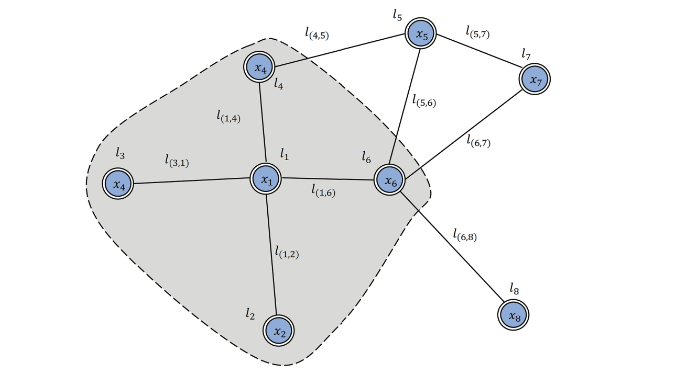

<!DOCTYPE html>
<html xmlns="http://www.w3.org/1999/xhtml" lang="en" xml:lang="en"><head>

<meta charset="utf-8">
<meta name="generator" content="quarto-1.2.335">

<meta name="viewport" content="width=device-width, initial-scale=1.0, user-scalable=yes">

<meta name="author" content="jiyun Lim">
<meta name="dcterms.date" content="2023-03-03">

<title>myblog - 0 Introductino to GNN</title>
<style>
code{white-space: pre-wrap;}
span.smallcaps{font-variant: small-caps;}
div.columns{display: flex; gap: min(4vw, 1.5em);}
div.column{flex: auto; overflow-x: auto;}
div.hanging-indent{margin-left: 1.5em; text-indent: -1.5em;}
ul.task-list{list-style: none;}
ul.task-list li input[type="checkbox"] {
  width: 0.8em;
  margin: 0 0.8em 0.2em -1.6em;
  vertical-align: middle;
}
</style>


<script src="../../site_libs/quarto-nav/quarto-nav.js"></script>
<script src="../../site_libs/quarto-nav/headroom.min.js"></script>
<script src="../../site_libs/clipboard/clipboard.min.js"></script>
<script src="../../site_libs/quarto-search/autocomplete.umd.js"></script>
<script src="../../site_libs/quarto-search/fuse.min.js"></script>
<script src="../../site_libs/quarto-search/quarto-search.js"></script>
<meta name="quarto:offset" content="../../">
<script src="../../site_libs/quarto-html/quarto.js"></script>
<script src="../../site_libs/quarto-html/popper.min.js"></script>
<script src="../../site_libs/quarto-html/tippy.umd.min.js"></script>
<script src="../../site_libs/quarto-html/anchor.min.js"></script>
<link href="../../site_libs/quarto-html/tippy.css" rel="stylesheet">
<link href="../../site_libs/quarto-html/quarto-syntax-highlighting.css" rel="stylesheet" id="quarto-text-highlighting-styles">
<script src="../../site_libs/bootstrap/bootstrap.min.js"></script>
<link href="../../site_libs/bootstrap/bootstrap-icons.css" rel="stylesheet">
<link href="../../site_libs/bootstrap/bootstrap.min.css" rel="stylesheet" id="quarto-bootstrap" data-mode="light">
<script id="quarto-search-options" type="application/json">{
  "location": "navbar",
  "copy-button": false,
  "collapse-after": 3,
  "panel-placement": "end",
  "type": "overlay",
  "limit": 20,
  "language": {
    "search-no-results-text": "No results",
    "search-matching-documents-text": "matching documents",
    "search-copy-link-title": "Copy link to search",
    "search-hide-matches-text": "Hide additional matches",
    "search-more-match-text": "more match in this document",
    "search-more-matches-text": "more matches in this document",
    "search-clear-button-title": "Clear",
    "search-detached-cancel-button-title": "Cancel",
    "search-submit-button-title": "Submit"
  }
}</script>

  <script src="https://cdn.jsdelivr.net/npm/mathjax@3/es5/tex-chtml-full.js" type="text/javascript"></script>

<link rel="stylesheet" href="../../styles.css">
</head>

<body class="nav-sidebar docked nav-fixed">

<div id="quarto-search-results"></div>
  <header id="quarto-header" class="headroom fixed-top">
    <nav class="navbar navbar-expand-lg navbar-dark ">
      <div class="navbar-container container-fluid">
      <div class="navbar-brand-container">
    <a class="navbar-brand" href="../../index.html">
    <span class="navbar-title">myblog</span>
    </a>
  </div>
          <button class="navbar-toggler" type="button" data-bs-toggle="collapse" data-bs-target="#navbarCollapse" aria-controls="navbarCollapse" aria-expanded="false" aria-label="Toggle navigation" onclick="if (window.quartoToggleHeadroom) { window.quartoToggleHeadroom(); }">
  <span class="navbar-toggler-icon"></span>
</button>
          <div class="collapse navbar-collapse" id="navbarCollapse">
            <ul class="navbar-nav navbar-nav-scroll ms-auto">
  <li class="nav-item">
    <a class="nav-link active" href="../../about.html" aria-current="page">
 <span class="menu-text">About</span></a>
  </li>  
  <li class="nav-item compact">
    <a class="nav-link" href="https://github.com/pinkocto"><i class="bi bi-github" role="img">
</i> 
 <span class="menu-text"></span></a>
  </li>  
</ul>
              <div id="quarto-search" class="" title="Search"></div>
          </div> <!-- /navcollapse -->
      </div> <!-- /container-fluid -->
    </nav>
  <nav class="quarto-secondary-nav" data-bs-toggle="collapse" data-bs-target="#quarto-sidebar" aria-controls="quarto-sidebar" aria-expanded="false" aria-label="Toggle sidebar navigation" onclick="if (window.quartoToggleHeadroom) { window.quartoToggleHeadroom(); }">
    <div class="container-fluid d-flex justify-content-between">
      <h1 class="quarto-secondary-nav-title">0 Introductino to GNN</h1>
      <button type="button" class="quarto-btn-toggle btn" aria-label="Show secondary navigation">
        <i class="bi bi-chevron-right"></i>
      </button>
    </div>
  </nav>
</header>
<!-- content -->
<header id="title-block-header" class="quarto-title-block default page-columns page-full">
  <div class="quarto-title-banner page-columns page-full">
    <div class="quarto-title column-body">
      <h1 class="title d-none d-lg-block">0 Introductino to GNN</h1>
                                <div class="quarto-categories">
                <div class="quarto-category">GNN</div>
              </div>
                  </div>
  </div>
    
  
  <div class="quarto-title-meta">

      <div>
      <div class="quarto-title-meta-heading">Author</div>
      <div class="quarto-title-meta-contents">
               <p>jiyun Lim </p>
            </div>
    </div>
      
      <div>
      <div class="quarto-title-meta-heading">Published</div>
      <div class="quarto-title-meta-contents">
        <p class="date">March 3, 2023</p>
      </div>
    </div>
    
      
    </div>
    
  
  </header><div id="quarto-content" class="quarto-container page-columns page-rows-contents page-layout-article page-navbar">
<!-- sidebar -->
  <nav id="quarto-sidebar" class="sidebar collapse sidebar-navigation docked overflow-auto">
      <div class="mt-2 flex-shrink-0 align-items-center">
        <div class="sidebar-search">
        <div id="quarto-search" class="" title="Search"></div>
        </div>
      </div>
    <div class="sidebar-menu-container"> 
    <ul class="list-unstyled mt-1">
        <li class="sidebar-item">
  <div class="sidebar-item-container"> 
  <a href="../../about.html" class="sidebar-item-text sidebar-link">About</a>
  </div>
</li>
        <li class="sidebar-item sidebar-item-section">
      <div class="sidebar-item-container"> 
            <a class="sidebar-item-text sidebar-link text-start" data-bs-toggle="collapse" data-bs-target="#quarto-sidebar-section-1" aria-expanded="true">Etc</a>
          <a class="sidebar-item-toggle text-start" data-bs-toggle="collapse" data-bs-target="#quarto-sidebar-section-1" aria-expanded="true">
            <i class="bi bi-chevron-right ms-2"></i>
          </a> 
      </div>
      <ul id="quarto-sidebar-section-1" class="collapse list-unstyled sidebar-section depth1 show">  
          <li class="sidebar-item">
  <div class="sidebar-item-container"> 
  <a href="../../etc/2023-02-20-memo.html" class="sidebar-item-text sidebar-link">메모장</a>
  </div>
</li>
          <li class="sidebar-item">
  <div class="sidebar-item-container"> 
  <a href="../../etc/2023-02-28.html" class="sidebar-item-text sidebar-link">클래스 암기</a>
  </div>
</li>
      </ul>
  </li>
        <li class="sidebar-item sidebar-item-section">
      <div class="sidebar-item-container"> 
            <a class="sidebar-item-text sidebar-link text-start" data-bs-toggle="collapse" data-bs-target="#quarto-sidebar-section-2" aria-expanded="true">Posts</a>
          <a class="sidebar-item-toggle text-start" data-bs-toggle="collapse" data-bs-target="#quarto-sidebar-section-2" aria-expanded="true">
            <i class="bi bi-chevron-right ms-2"></i>
          </a> 
      </div>
      <ul id="quarto-sidebar-section-2" class="collapse list-unstyled sidebar-section depth1 show">  
          <li class="sidebar-item sidebar-item-section">
      <div class="sidebar-item-container"> 
            <a class="sidebar-item-text sidebar-link text-start collapsed" data-bs-toggle="collapse" data-bs-target="#quarto-sidebar-section-3" aria-expanded="false">DNN</a>
          <a class="sidebar-item-toggle text-start collapsed" data-bs-toggle="collapse" data-bs-target="#quarto-sidebar-section-3" aria-expanded="false">
            <i class="bi bi-chevron-right ms-2"></i>
          </a> 
      </div>
      <ul id="quarto-sidebar-section-3" class="collapse list-unstyled sidebar-section depth2 ">  
          <li class="sidebar-item">
  <div class="sidebar-item-container"> 
  <a href="../../posts/DNN/2023-03-01-dnn1.html" class="sidebar-item-text sidebar-link">딥러닝 기초 (1)</a>
  </div>
</li>
          <li class="sidebar-item">
  <div class="sidebar-item-container"> 
  <a href="../../posts/DNN/2023-03-01-dnn2.html" class="sidebar-item-text sidebar-link">딥러닝 기초 (2)</a>
  </div>
</li>
      </ul>
  </li>
          <li class="sidebar-item sidebar-item-section">
      <div class="sidebar-item-container"> 
            <a class="sidebar-item-text sidebar-link text-start collapsed" data-bs-toggle="collapse" data-bs-target="#quarto-sidebar-section-4" aria-expanded="false">GCN</a>
          <a class="sidebar-item-toggle text-start collapsed" data-bs-toggle="collapse" data-bs-target="#quarto-sidebar-section-4" aria-expanded="false">
            <i class="bi bi-chevron-right ms-2"></i>
          </a> 
      </div>
      <ul id="quarto-sidebar-section-4" class="collapse list-unstyled sidebar-section depth2 ">  
          <li class="sidebar-item">
  <div class="sidebar-item-container"> 
  <a href="../../posts/GCN/2023-02-27-gcn-prac.html" class="sidebar-item-text sidebar-link">GCN Implementation</a>
  </div>
</li>
          <li class="sidebar-item">
  <div class="sidebar-item-container"> 
  <a href="../../posts/GCN/2023-02-21-gcn1.html" class="sidebar-item-text sidebar-link">Graph Convolutional Network</a>
  </div>
</li>
      </ul>
  </li>
          <li class="sidebar-item sidebar-item-section">
      <div class="sidebar-item-container"> 
            <a class="sidebar-item-text sidebar-link text-start" data-bs-toggle="collapse" data-bs-target="#quarto-sidebar-section-5" aria-expanded="true">GNN</a>
          <a class="sidebar-item-toggle text-start" data-bs-toggle="collapse" data-bs-target="#quarto-sidebar-section-5" aria-expanded="true">
            <i class="bi bi-chevron-right ms-2"></i>
          </a> 
      </div>
      <ul id="quarto-sidebar-section-5" class="collapse list-unstyled sidebar-section depth2 show">  
          <li class="sidebar-item">
  <div class="sidebar-item-container"> 
  <a href="../../posts/GNN/2023-03-03-gnn1.html" class="sidebar-item-text sidebar-link active">0 Introductino to GNN</a>
  </div>
</li>
          <li class="sidebar-item">
  <div class="sidebar-item-container"> 
  <a href="../../posts/GNN/2023-03-04-gnn-intro.html" class="sidebar-item-text sidebar-link">1 GNN prac1</a>
  </div>
</li>
      </ul>
  </li>
          <li class="sidebar-item sidebar-item-section">
      <div class="sidebar-item-container"> 
            <a class="sidebar-item-text sidebar-link text-start collapsed" data-bs-toggle="collapse" data-bs-target="#quarto-sidebar-section-6" aria-expanded="false">RNN</a>
          <a class="sidebar-item-toggle text-start collapsed" data-bs-toggle="collapse" data-bs-target="#quarto-sidebar-section-6" aria-expanded="false">
            <i class="bi bi-chevron-right ms-2"></i>
          </a> 
      </div>
      <ul id="quarto-sidebar-section-6" class="collapse list-unstyled sidebar-section depth2 ">  
          <li class="sidebar-item">
  <div class="sidebar-item-container"> 
  <a href="../../posts/RNN/2023-02-25-rnn1.html" class="sidebar-item-text sidebar-link">순환신경망 (1)</a>
  </div>
</li>
          <li class="sidebar-item">
  <div class="sidebar-item-container"> 
  <a href="../../posts/RNN/2023-02-25-rnn2.html" class="sidebar-item-text sidebar-link">순환신경망 (2)</a>
  </div>
</li>
          <li class="sidebar-item">
  <div class="sidebar-item-container"> 
  <a href="../../posts/RNN/2023-02-28-rnn3.html" class="sidebar-item-text sidebar-link">순환신경망 (3)</a>
  </div>
</li>
          <li class="sidebar-item">
  <div class="sidebar-item-container"> 
  <a href="../../posts/RNN/2023-02-28-rnn4.html" class="sidebar-item-text sidebar-link">순환신경망 (4)</a>
  </div>
</li>
          <li class="sidebar-item">
  <div class="sidebar-item-container"> 
  <a href="../../posts/RNN/2023-03-01-rnn5.html" class="sidebar-item-text sidebar-link">순환신경망 (5)</a>
  </div>
</li>
          <li class="sidebar-item">
  <div class="sidebar-item-container"> 
  <a href="../../posts/RNN/2023-03-01-rnn6.html" class="sidebar-item-text sidebar-link">순환신경망 (6)</a>
  </div>
</li>
      </ul>
  </li>
          <li class="sidebar-item sidebar-item-section">
      <div class="sidebar-item-container"> 
            <a class="sidebar-item-text sidebar-link text-start collapsed" data-bs-toggle="collapse" data-bs-target="#quarto-sidebar-section-7" aria-expanded="false">STGCN</a>
          <a class="sidebar-item-toggle text-start collapsed" data-bs-toggle="collapse" data-bs-target="#quarto-sidebar-section-7" aria-expanded="false">
            <i class="bi bi-chevron-right ms-2"></i>
          </a> 
      </div>
      <ul id="quarto-sidebar-section-7" class="collapse list-unstyled sidebar-section depth2 ">  
          <li class="sidebar-item sidebar-item-section">
      <div class="sidebar-item-container"> 
            <a class="sidebar-item-text sidebar-link text-start collapsed" data-bs-toggle="collapse" data-bs-target="#quarto-sidebar-section-8" aria-expanded="false">STGCN 공부</a>
          <a class="sidebar-item-toggle text-start collapsed" data-bs-toggle="collapse" data-bs-target="#quarto-sidebar-section-8" aria-expanded="false">
            <i class="bi bi-chevron-right ms-2"></i>
          </a> 
      </div>
      <ul id="quarto-sidebar-section-8" class="collapse list-unstyled sidebar-section depth3 ">  
          <li class="sidebar-item">
  <div class="sidebar-item-container"> 
  <a href="../../posts/STGCN/STGCN 공부/traffic_prediction.html" class="sidebar-item-text sidebar-link">Traffic Forecasting review</a>
  </div>
</li>
          <li class="sidebar-item">
  <div class="sidebar-item-container"> 
  <a href="../../posts/STGCN/STGCN 공부/2023-02-21-STGCN-tutorial1.html" class="sidebar-item-text sidebar-link">튜토리얼 따라가기1</a>
  </div>
</li>
          <li class="sidebar-item">
  <div class="sidebar-item-container"> 
  <a href="../../posts/STGCN/STGCN 공부/2023-02-23-stgcn-tutorial2.html" class="sidebar-item-text sidebar-link">튜토리얼 따라가기2</a>
  </div>
</li>
      </ul>
  </li>
          <li class="sidebar-item sidebar-item-section">
      <div class="sidebar-item-container"> 
            <a class="sidebar-item-text sidebar-link text-start collapsed" data-bs-toggle="collapse" data-bs-target="#quarto-sidebar-section-9" aria-expanded="false">튜토리얼</a>
          <a class="sidebar-item-toggle text-start collapsed" data-bs-toggle="collapse" data-bs-target="#quarto-sidebar-section-9" aria-expanded="false">
            <i class="bi bi-chevron-right ms-2"></i>
          </a> 
      </div>
      <ul id="quarto-sidebar-section-9" class="collapse list-unstyled sidebar-section depth3 ">  
          <li class="sidebar-item">
  <div class="sidebar-item-container"> 
  <a href="../../posts/STGCN/튜토리얼/2022-12-29-STGCN-tutorial.html" class="sidebar-item-text sidebar-link">STGCN 튜토리얼</a>
  </div>
</li>
          <li class="sidebar-item">
  <div class="sidebar-item-container"> 
  <a href="../../posts/STGCN/튜토리얼/2022-12-30-STGCN-Toy Example.html" class="sidebar-item-text sidebar-link">Toy Example</a>
  </div>
</li>
      </ul>
  </li>
      </ul>
  </li>
          <li class="sidebar-item sidebar-item-section">
      <div class="sidebar-item-container"> 
            <a class="sidebar-item-text sidebar-link text-start collapsed" data-bs-toggle="collapse" data-bs-target="#quarto-sidebar-section-10" aria-expanded="false">Study</a>
          <a class="sidebar-item-toggle text-start collapsed" data-bs-toggle="collapse" data-bs-target="#quarto-sidebar-section-10" aria-expanded="false">
            <i class="bi bi-chevron-right ms-2"></i>
          </a> 
      </div>
      <ul id="quarto-sidebar-section-10" class="collapse list-unstyled sidebar-section depth2 ">  
          <li class="sidebar-item">
  <div class="sidebar-item-container"> 
  <a href="../../posts/study/2023-02-25-chap12.2.html" class="sidebar-item-text sidebar-link">Chap 12.2: Weakly Stationary Graph process</a>
  </div>
</li>
          <li class="sidebar-item">
  <div class="sidebar-item-container"> 
  <a href="../../posts/study/2023-02-24-Chap8.3.html" class="sidebar-item-text sidebar-link">Chap 8.3: Discrete Fourier Transform</a>
  </div>
</li>
          <li class="sidebar-item sidebar-item-section">
      <div class="sidebar-item-container"> 
            <a class="sidebar-item-text sidebar-link text-start collapsed" data-bs-toggle="collapse" data-bs-target="#quarto-sidebar-section-11" aria-expanded="false">Prof</a>
          <a class="sidebar-item-toggle text-start collapsed" data-bs-toggle="collapse" data-bs-target="#quarto-sidebar-section-11" aria-expanded="false">
            <i class="bi bi-chevron-right ms-2"></i>
          </a> 
      </div>
      <ul id="quarto-sidebar-section-11" class="collapse list-unstyled sidebar-section depth3 ">  
          <li class="sidebar-item">
  <div class="sidebar-item-container"> 
  <a href="../../posts/study/prof/2022-12-27-Chap-12.2.1~12.3.1.html" class="sidebar-item-text sidebar-link">Chap 12.2 ~ 3: Power Spectral Density and its Estimators</a>
  </div>
</li>
          <li class="sidebar-item">
  <div class="sidebar-item-container"> 
  <a href="../../posts/study/prof/2022-12-26-Chap-12.2.html" class="sidebar-item-text sidebar-link">Chap 12.2: Weakly Stationary Graph Processes</a>
  </div>
</li>
          <li class="sidebar-item">
  <div class="sidebar-item-container"> 
  <a href="../../posts/study/prof/2023-01-15-Chap-12.4.html" class="sidebar-item-text sidebar-link">Chap 12.4: Node Subsampling for PSD Estimation</a>
  </div>
</li>
          <li class="sidebar-item">
  <div class="sidebar-item-container"> 
  <a href="../../posts/study/prof/2022-12-24-Chap 8.3.html" class="sidebar-item-text sidebar-link">Chap 8.3: Discrete Fourier Transform</a>
  </div>
</li>
      </ul>
  </li>
      </ul>
  </li>
      </ul>
  </li>
        <li class="sidebar-item sidebar-item-section">
      <div class="sidebar-item-container"> 
            <a class="sidebar-item-text sidebar-link text-start" data-bs-toggle="collapse" data-bs-target="#quarto-sidebar-section-12" aria-expanded="true">Tip</a>
          <a class="sidebar-item-toggle text-start" data-bs-toggle="collapse" data-bs-target="#quarto-sidebar-section-12" aria-expanded="true">
            <i class="bi bi-chevron-right ms-2"></i>
          </a> 
      </div>
      <ul id="quarto-sidebar-section-12" class="collapse list-unstyled sidebar-section depth1 show">  
          <li class="sidebar-item">
  <div class="sidebar-item-container"> 
  <a href="../../Tip/2023-02-20-tips.html" class="sidebar-item-text sidebar-link">download files from Github</a>
  </div>
</li>
          <li class="sidebar-item">
  <div class="sidebar-item-container"> 
  <a href="../../Tip/2023-02-24-tips.html" class="sidebar-item-text sidebar-link">Julia 연동</a>
  </div>
</li>
          <li class="sidebar-item">
  <div class="sidebar-item-container"> 
  <a href="../../Tip/2023-02-28-link.html" class="sidebar-item-text sidebar-link">some links</a>
  </div>
</li>
      </ul>
  </li>
    </ul>
    </div>
</nav>
<!-- margin-sidebar -->
    <div id="quarto-margin-sidebar" class="sidebar margin-sidebar">
        <nav id="TOC" role="doc-toc" class="toc-active">
    <h2 id="toc-title">On this page</h2>
   
  <ul>
  <li><a href="#gnn" id="toc-gnn" class="nav-link active" data-scroll-target="#gnn">GNN</a>
  <ul class="collapse">
  <li><a href="#motivation" id="toc-motivation" class="nav-link" data-scroll-target="#motivation">MOTIVATION</a>
  <ul class="collapse">
  <li><a href="#convolutional-neural-networks" id="toc-convolutional-neural-networks" class="nav-link" data-scroll-target="#convolutional-neural-networks"><code>-</code> Convolutional Neural Networks</a></li>
  <li><a href="#network-embedding" id="toc-network-embedding" class="nav-link" data-scroll-target="#network-embedding"><code>-</code> NETWORK EMBEDDING</a></li>
  </ul></li>
  <li><a href="#vanilla-graph-nueral-networks" id="toc-vanilla-graph-nueral-networks" class="nav-link" data-scroll-target="#vanilla-graph-nueral-networks">Vanilla Graph Nueral Networks</a>
  <ul class="collapse">
  <li><a href="#intro" id="toc-intro" class="nav-link" data-scroll-target="#intro">intro</a></li>
  <li><a href="#model" id="toc-model" class="nav-link" data-scroll-target="#model">Model</a></li>
  <li><a href="#how-to-learn-the-parameters-of-f-g" id="toc-how-to-learn-the-parameters-of-f-g" class="nav-link" data-scroll-target="#how-to-learn-the-parameters-of-f-g">How to learn the parameters of <span class="math inline">\(f, g\)</span></a></li>
  <li><a href="#limitations" id="toc-limitations" class="nav-link" data-scroll-target="#limitations">Limitations</a></li>
  </ul></li>
  <li><a href="#graph-convolutional-networks" id="toc-graph-convolutional-networks" class="nav-link" data-scroll-target="#graph-convolutional-networks">Graph Convolutional Networks</a>
  <ul class="collapse">
  <li><a href="#spectral-methods" id="toc-spectral-methods" class="nav-link" data-scroll-target="#spectral-methods">1. Spectral methods</a></li>
  <li><a href="#spatial-methods" id="toc-spatial-methods" class="nav-link" data-scroll-target="#spatial-methods">2. Spatial methods</a></li>
  </ul></li>
  </ul></li>
  </ul>
</nav>
    </div>
<!-- main -->
<main class="content quarto-banner-title-block" id="quarto-document-content">


<section id="gnn" class="level1">
<h1>GNN</h1>
<p>The GNN is designed specifically to handle graph-structured data, such as social networks, molecular structures, knowledge graphs, etc.</p>
<section id="motivation" class="level2">
<h2 class="anchored" data-anchor-id="motivation">MOTIVATION</h2>
<section id="convolutional-neural-networks" class="level3">
<h3 class="anchored" data-anchor-id="convolutional-neural-networks"><code>-</code> Convolutional Neural Networks</h3>
<p>CNN<a href="#fn1" class="footnote-ref" id="fnref1" role="doc-noteref"><sup>1</sup></a> 은 GNN의 계기가 됐다. CNN은 여러 단계의 지역화된 공간특징을 추출하고 재구성해 표현력이 높다. 그 결과 거의 모든 머신러닝 영역에서 돌파구가 됐고 딥러닝의 혁명을 가져왔다. graphs와 CNN을 깊이 파다보면 그래프에서 잘 사용될 수 있는 기술들이 이미 CNN에 있음을 알 수 있다.</p>
<ul>
<li><ol type="1">
<li>graphs are the most typical locally connected structure.</li>
</ol></li>
<li><ol start="2" type="1">
<li>shared weights reduce the computational cost compared with traditional spectral graph theory<a href="#fn2" class="footnote-ref" id="fnref2" role="doc-noteref"><sup>2</sup></a></li>
</ol></li>
<li><ol start="3" type="1">
<li>multi-layer structure structure is the key to deal with hierarchical patterns, which captures the features of various sizes.</li>
</ol></li>
</ul>
<p>However, CNNs can only operate on regular Euclidean data like images (2D grid) and text (1D sequence), which can also be regarded as instances of graphs. Therefore, it is straightforward to think of finding the generalization of CNNs to graphs. But, it is hard to define localized convolutional filters and pooling operators, which hinders the transformation of CNN from Euclidean to non-Euclidean domain</p>
<p><strong><em>(동기1): CNN을 확장해 그래프에 적용할 수도 있지않을까 생각해볼 수도 있지만 CNN은 이미지(2D grid), 텍스트(1D sequence) 등 일반적인 유클리드 데이터에서만 작동할 수 있다.</em></strong></p>
<ul>
<li>(localized convolutional filters와 pooling 작업을 정의하기 어려워서 CNN을 “Euclidean <span class="math inline">\(\to\)</span>non-Euclidean domain” 로의 확장은 힘들다.)</li>
</ul>
</section>
<section id="network-embedding" class="level3">
<h3 class="anchored" data-anchor-id="network-embedding"><code>-</code> NETWORK EMBEDDING</h3>
<p>The other motivation comes from graph embedding<a href="#fn3" class="footnote-ref" id="fnref3" role="doc-noteref"><sup>3</sup></a>, which learns to represent graph nodes, edges, or subgraphs in low-dimensional vectors.</p>
<p>In graph analysis, traditional machine learning approaches usually rely on hand-engineered features and are limited by its inflexibility and high cost. Following the idea of representation learning and the success of word embedding<a href="#fn4" class="footnote-ref" id="fnref4" role="doc-noteref"><sup>4</sup></a>, DeepWalk<a href="#fn5" class="footnote-ref" id="fnref5" role="doc-noteref"><sup>5</sup></a>, which is regarded as the first graph embedding method based on representation learning, applies SkipGram model<a href="#fn6" class="footnote-ref" id="fnref6" role="doc-noteref"><sup>6</sup></a> on the generated random walks. Similar approaches such as node2vec<a href="#fn7" class="footnote-ref" id="fnref7" role="doc-noteref"><sup>7</sup></a>, LINE<a href="#fn8" class="footnote-ref" id="fnref8" role="doc-noteref"><sup>8</sup></a>, and TADW<a href="#fn9" class="footnote-ref" id="fnref9" role="doc-noteref"><sup>9</sup></a> also achieved breakthroughs. However, these methods suffer from two severe drawbacks<a href="#fn10" class="footnote-ref" id="fnref10" role="doc-noteref"><sup>10</sup></a>.</p>
<ul>
<li><p>First, no parameters are shared between nodes in the encoder, which leads to computational inefficiency, since it means the number of parameters grows linearly with the number of nodes.</p></li>
<li><p>Second, the direct embedding methods lack the ability of generalization, which means they cannot deal with dynamic graphs or be generalized to new graphs.</p></li>
</ul>
<p><strong><em>(동기2): 그래프의 node, edges, subgraphs를 낮은차원의 벡터로 표현하는 그래프 임베딩 문제. (계산 비효율적, 확장성 부족)</em></strong></p>
<hr>
<p>. Wu et al.&nbsp;[2019c] categorize GNNs into four groups: recurrent graph neural networks (RecGNNs), convolutional graph neural networks (ConvGNNs), graph auto-encoders (GAEs), and spatial-temporal graph neural networks (STGNNs).</p>
<hr>
</section>
</section>
<section id="vanilla-graph-nueral-networks" class="level2">
<h2 class="anchored" data-anchor-id="vanilla-graph-nueral-networks">Vanilla Graph Nueral Networks</h2>
<section id="intro" class="level3">
<h3 class="anchored" data-anchor-id="intro">intro</h3>
<p>The concept of GNN was first proposed in Gori <a href="#fn11" class="footnote-ref" id="fnref11" role="doc-noteref"><sup>11</sup></a>. For simplicity, we will talk about the model proposed in Scarselli<a href="#fn12" class="footnote-ref" id="fnref12" role="doc-noteref"><sup>12</sup></a>, which aims to extend existing neural networks for processing graph-structured data.</p>
<p>A node is naturally defined by its features and related nodes in the graph. The target of GNN is to learn a state embedding <span class="math inline">\(h_v \in \mathbb{R}^s\)</span> , which encodes the information of the neighborhood, for each node. The state embedding hv is used to produce an output ov, such as the distribution of the predicted node label. In Scarselli<a href="#fn13" class="footnote-ref" id="fnref13" role="doc-noteref"><sup>13</sup></a>, a typical graph is illustrated in Figure 4.1. The vanilla GNN model deals with the undirected homogeneous graph where each node in the graph has its input features <span class="math inline">\(x_v\)</span> and each edge may also have its features. The paper uses <span class="math inline">\(co[v]\)</span> and <span class="math inline">\(ne[v]\)</span> to denote the set of edges and neighbors of node <span class="math inline">\(v\)</span>. For processing other more complicated graphs such as heterogeneous graphs, the corresponding variants of GNNs could be found in later chapter</p>
<p><em>GNN의 개념은 Gori<a href="#fn14" class="footnote-ref" id="fnref14" role="doc-noteref"><sup>14</sup></a> 와 Scarselli<a href="#fn15" class="footnote-ref" id="fnref15" role="doc-noteref"><sup>15</sup></a> 가 제안했다. 여기서는 앞으로 소개할 모델로의 확장이 자연스러운 Scarselli<a href="#fn16" class="footnote-ref" id="fnref16" role="doc-noteref"><sup>16</sup></a> 의 모델을 대표로 설명한다.</em></p>
<ul>
<li><p><strong><em>GNN의 최종목표는 각 노드의 state embedding <span class="math inline">\(\bf{h}_v \in \mathbb{R}^2\)</span>를 학습하는 것!</em></strong></p></li>
<li><p>state embedding <span class="math inline">\(\bf{h}_v\)</span>는 해당노드와 주변노드의 정보를 포함하고 있으며, node <span class="math inline">\(v\)</span>의 출력값인 <span class="math inline">\(\bf{o}_v\)</span>를 얻을 때 사용한다.</p></li>
<li><p><em>(참고) 기본 그래프 신경망은 무향 동종 그래프이며, 각 노드는 input features <span class="math inline">\(\bf{x}_v\)</span> 가 있고, edge도 features를 가질 수 있다.</em></p></li>
</ul>
</section>
<section id="model" class="level3">
<h3 class="anchored" data-anchor-id="model">Model</h3>
<p>Given the input features of nodes and edges, next we will talk about how the model obtains the node embedding hv and the output embedding <span class="math inline">\(o_v\)</span>.</p>
<div class="quarto-figure quarto-figure-center">
<figure class="figure">
<p></p>
<p></p><figcaption class="figure-caption">An example of the graph based on Scarselli et al.[2009]</figcaption><p></p>
</figure>
</div>
<p><span class="math display">\[\bf{h}_v = f(\bf{x}_v,\bf{x}_{co[v]}, \bf{h}_{ne[v]}, \bf{x}_{ne[v]})\]</span></p>
<p><span class="math display">\[\bf{o}_v = g(\bf{h}_v,\bf{x}_v)\]</span></p>
<ul>
<li><span class="math inline">\(\bf{x}\)</span> : input feature</li>
<li><span class="math inline">\(\bf{h}\)</span> : hidden state</li>
<li><span class="math inline">\(co[v]\)</span> : the set of edges connected to node <span class="math inline">\(v\)</span> (node <span class="math inline">\(v\)</span> 에 연결된 edge 집합)</li>
<li><span class="math inline">\(ne[v]\)</span> : set of neighbors of node <span class="math inline">\(v\)</span> (node <span class="math inline">\(v\)</span>에 인접한 노드 집합)</li>
<li><span class="math inline">\(f\)</span> : local transition function (이웃으로부터 node state를 업데이트 하기 위해 노드들끼리 공유하는 함수)</li>
<li><span class="math inline">\(g\)</span> : local output function (노드의 출력값을 계산하기 위한 함수)</li>
</ul>
<p><span class="math inline">\(\bf{x}_v, \bf{x}_{co[v]}, \bf{h}_{ne[v]}, \bf{x}_{ne[v]}\)</span> are the feature of <span class="math inline">\(v\)</span>, the state and the feature of the node in the neighborhood of <span class="math inline">\(v\)</span>, respectively.</p>
<p><span class="math display">\[\bf{H} = F(\bf{H}, \bf{X})\]</span> <span class="math display">\[\bf{O} = G(\bf{H}, \bf{X}_N)\]</span></p>
<p>여기서 <span class="math inline">\(F\)</span>와 <span class="math inline">\(G\)</span>는 모든 노드에 대한 local transition function <span class="math inline">\(f\)</span>와 local output function <span class="math inline">\(g\)</span>를 쌓은 버전이라고 생각하면 된다. <span class="math inline">\(\bf{H}\)</span>는 fixed point이며, <span class="math inline">\(F\)</span>가 contraction map이라면 유일하게 정의된다. &lt;- 이게 무슨소리지?</p>
<p>Banach’s fixed point theorem<a href="#fn17" class="footnote-ref" id="fnref17" role="doc-noteref"><sup>17</sup></a> 를 바탕으로 GNN은 다음과 같은 고전적인 반복 계산법을 사용한다.</p>
<p><span class="math display">\[\bf{H}^{t+1} = F(\bf{H}^t,\bf{X})\]</span></p>
<ul>
<li><p><span class="math inline">\(\bf{H}^t\)</span>: <span class="math inline">\(\bf{H}\)</span>를 <span class="math inline">\(t\)</span>번 반복한 결과값.</p></li>
<li><p>임의의 초깃값 <span class="math inline">\(\bf{H}^0\)</span>에 대해 <span class="math inline">\(\bf{H}^{t+1} = F(\bf{H}^t,\bf{X})\)</span>는 기하급수적으로 빠르게 <span class="math inline">\(\bf{H} = F(\bf{H}, \bf{X})\)</span>의 해에 수렴한다.</p></li>
<li><p>(참고) <span class="math inline">\(f\)</span>, <span class="math inline">\(g\)</span>를 통하는 계산을 FNN이라고 해석될 수 있다.</p></li>
</ul>
</section>
<section id="how-to-learn-the-parameters-of-f-g" class="level3">
<h3 class="anchored" data-anchor-id="how-to-learn-the-parameters-of-f-g">How to learn the parameters of <span class="math inline">\(f, g\)</span></h3>
<p>After the introduction of the framework of GNN, the next question is how to learn the parameters of the local transition function <span class="math inline">\(f\)</span> and local output function <span class="math inline">\(g\)</span>. With the target information (<span class="math inline">\(t_v\)</span> for a specific node) for the supervision, the loss can be written as:</p>
<p><span class="math display">\[loss =\sum_{i=1}^p(t_i - o_i)\]</span></p>
<p>where <span class="math inline">\(p\)</span> is the number of supervised nodes.</p>
<p>The learning algorithm is based on a <strong>gradient descent strategy</strong> and is composed of the following steps.</p>
<ul>
<li><p><strong>step1.</strong> : The states <span class="math inline">\(\bf{h}_v^t\)</span> are iteratively updated by <span class="math inline">\(\bf{h}_v = f(\bf{x}_v,\bf{x}_{co[v]}, \bf{h}_{ne[v]}, \bf{x}_{ne[v]})\)</span> until a time step <span class="math inline">\(T\)</span>. Then we obtain an approximation fixed point solution <span class="math inline">\(\bf{H} = F(\bf{H}, \bf{X}): \space\space \bf{H}(T)\approx \bf{H}\)</span>.</p></li>
<li><p><strong>step2.</strong>: The gradient of weights <span class="math inline">\(\bf{W}\)</span> is computed from the loss</p></li>
<li><p><strong>step3.</strong>: The weights <span class="math inline">\(\bf{W}\)</span> are updated according to the gradient computed in the last step.</p></li>
</ul>
<p>After running the algorithm, we can get a model trained for a specific supervised/semisupervised task as well as hidden states of nodes in the graph. The vanilla GNN model provides an effective way to model graphic data and it is the first step toward incorporating neural networks into graph domain.</p>
</section>
<section id="limitations" class="level3">
<h3 class="anchored" data-anchor-id="limitations">Limitations</h3>
<p>Though experimental results showed that GNN is a powerful architecture for modeling structural data, there are still several limitations of the vanilla GNN.</p>
<ul>
<li><p><code>1.</code> it is computationally inefficient to update the hidden states of nodes iteratively to get the fixed point. The model needs T steps of computation to approximate the fixed point. If relaxing the assumption of the fixed point, we can design a multi-layer GNN to get a stable representation of the node and its neighborhood.</p></li>
<li><p><code>2.</code> vanilla GNN uses the same parameters in the iteration while most popular neural networks use different parameters in different layers, which serves as a hierarchical feature extraction method. Moreover, the update of node hidden states is a sequential process which can benefit from the RNN kernels like GRU and LSTM</p></li>
<li><p><code>3.</code> Third, there are also some informative features on the edges which cannot be effectively modeled in the vanilla GNN. For example, the edges in the knowledge graph have the type of relations and the message propagation through different edges should be different according to their types. Besides, how to learn the hidden states of edges is also an important problem.</p></li>
<li><p><code>4.</code> Last, if T is pretty large, it is unsuitable to use the fixed points if we focus on the representation of nodes instead of graphs because the distribution of representation in the fixed point will be much more smooth in value and less informative for distinguishing each node.</p></li>
</ul>
<p>Beyond the vanilla GNN, several variants are proposed to release these limitations. For example, Gated Graph Neural Network (GGNN)<a href="#fn18" class="footnote-ref" id="fnref18" role="doc-noteref"><sup>18</sup></a> is proposed to solve the first problem. Relational GCN (R-GCN)<a href="#fn19" class="footnote-ref" id="fnref19" role="doc-noteref"><sup>19</sup></a> is proposed to deal with directed graphs. More details could be found in the following chapters</p>
</section>
</section>
<section id="graph-convolutional-networks" class="level2">
<h2 class="anchored" data-anchor-id="graph-convolutional-networks">Graph Convolutional Networks</h2>
<p>We will talk about graph convolutional networks (GCNs), which aim to generalize convolutions to the graph domain. As convolutional neural networks (CNNs) have achieved great success in the area of deep learning, it is intuitive to define the convolution operation on graphs. Advances in this direction are often categorized as <strong><em>spectral approaches</em></strong> and <strong><em>spatial approaches</em></strong>. As there may have vast variants in each direction, we only list several classic models in this chapter.</p>
<section id="spectral-methods" class="level3">
<h3 class="anchored" data-anchor-id="spectral-methods">1. Spectral methods</h3>
<p>Spectral approaches work with a spectral representation of the graphs. In this section we will talk about four classic models (Spectral Network, ChebNet, GCN, and AGCN).</p>
<ul>
<li><p>Spectral network</p></li>
<li><p>ChebNet</p></li>
<li><p>GCN</p></li>
<li><p>AGCN</p></li>
</ul>
</section>
<section id="spatial-methods" class="level3">
<h3 class="anchored" data-anchor-id="spatial-methods">2. Spatial methods</h3>
<ul>
<li><p>Neural FPs</p></li>
<li><p>PATCHY-SAN</p></li>
<li><p>DCNN</p></li>
<li><p>DGCN</p></li>
<li><p>LGCN</p></li>
<li><p>MoNet</p></li>
<li><p>GraphSAGE</p></li>
</ul>
<hr>


</section>
</section>
</section>


<div id="quarto-appendix" class="default"><section id="footnotes" class="footnotes footnotes-end-of-document" role="doc-endnotes"><h2 class="anchored quarto-appendix-heading">Footnotes</h2>

<ol>
<li id="fn1"><p>LeCun at al., 1988<a href="#fnref1" class="footnote-back" role="doc-backlink">↩︎</a></p></li>
<li id="fn2"><p>Chung and Graham, 1997<a href="#fnref2" class="footnote-back" role="doc-backlink">↩︎</a></p></li>
<li id="fn3"><p>Cai at al., 2018, Cui at al., 2018, Goyal and Ferrara, 2018, Hamilton et al., 2017a, Zhang et al., 2018a<a href="#fnref3" class="footnote-back" role="doc-backlink">↩︎</a></p></li>
<li id="fn4"><p>Mikolov et al., 2013<a href="#fnref4" class="footnote-back" role="doc-backlink">↩︎</a></p></li>
<li id="fn5"><p>Perozzi et al., 2014<a href="#fnref5" class="footnote-back" role="doc-backlink">↩︎</a></p></li>
<li id="fn6"><p>Mikolov et al., 2013<a href="#fnref6" class="footnote-back" role="doc-backlink">↩︎</a></p></li>
<li id="fn7"><p>Grover and Leskovec, 2016<a href="#fnref7" class="footnote-back" role="doc-backlink">↩︎</a></p></li>
<li id="fn8"><p>Tang et al., 2015<a href="#fnref8" class="footnote-back" role="doc-backlink">↩︎</a></p></li>
<li id="fn9"><p>Yang et al., 2015b<a href="#fnref9" class="footnote-back" role="doc-backlink">↩︎</a></p></li>
<li id="fn10"><p>Hamilton et al.,2017a<a href="#fnref10" class="footnote-back" role="doc-backlink">↩︎</a></p></li>
<li id="fn11"><p>et al.[2005], Scarselli et al.&nbsp;[2004, 2009]<a href="#fnref11" class="footnote-back" role="doc-backlink">↩︎</a></p></li>
<li id="fn12"><p>et al.&nbsp;[2009]<a href="#fnref12" class="footnote-back" role="doc-backlink">↩︎</a></p></li>
<li id="fn13"><p>et al.&nbsp;[2009]<a href="#fnref13" class="footnote-back" role="doc-backlink">↩︎</a></p></li>
<li id="fn14"><p>Gori et al., 2005<a href="#fnref14" class="footnote-back" role="doc-backlink">↩︎</a></p></li>
<li id="fn15"><p>Scarselli et al., 2004, 2009<a href="#fnref15" class="footnote-back" role="doc-backlink">↩︎</a></p></li>
<li id="fn16"><p>Scarselli et al.&nbsp;2009<a href="#fnref16" class="footnote-back" role="doc-backlink">↩︎</a></p></li>
<li id="fn17"><p>Khamsi and Kirk, 2011<a href="#fnref17" class="footnote-back" role="doc-backlink">↩︎</a></p></li>
<li id="fn18"><p>Li et al., 2016<a href="#fnref18" class="footnote-back" role="doc-backlink">↩︎</a></p></li>
<li id="fn19"><p>Schlichtkrull et al., 2018<a href="#fnref19" class="footnote-back" role="doc-backlink">↩︎</a></p></li>
</ol>
</section></div></main> <!-- /main -->
<script id="quarto-html-after-body" type="application/javascript">
window.document.addEventListener("DOMContentLoaded", function (event) {
  const toggleBodyColorMode = (bsSheetEl) => {
    const mode = bsSheetEl.getAttribute("data-mode");
    const bodyEl = window.document.querySelector("body");
    if (mode === "dark") {
      bodyEl.classList.add("quarto-dark");
      bodyEl.classList.remove("quarto-light");
    } else {
      bodyEl.classList.add("quarto-light");
      bodyEl.classList.remove("quarto-dark");
    }
  }
  const toggleBodyColorPrimary = () => {
    const bsSheetEl = window.document.querySelector("link#quarto-bootstrap");
    if (bsSheetEl) {
      toggleBodyColorMode(bsSheetEl);
    }
  }
  toggleBodyColorPrimary();  
  const icon = "";
  const anchorJS = new window.AnchorJS();
  anchorJS.options = {
    placement: 'right',
    icon: icon
  };
  anchorJS.add('.anchored');
  const clipboard = new window.ClipboardJS('.code-copy-button', {
    target: function(trigger) {
      return trigger.previousElementSibling;
    }
  });
  clipboard.on('success', function(e) {
    // button target
    const button = e.trigger;
    // don't keep focus
    button.blur();
    // flash "checked"
    button.classList.add('code-copy-button-checked');
    var currentTitle = button.getAttribute("title");
    button.setAttribute("title", "Copied!");
    let tooltip;
    if (window.bootstrap) {
      button.setAttribute("data-bs-toggle", "tooltip");
      button.setAttribute("data-bs-placement", "left");
      button.setAttribute("data-bs-title", "Copied!");
      tooltip = new bootstrap.Tooltip(button, 
        { trigger: "manual", 
          customClass: "code-copy-button-tooltip",
          offset: [0, -8]});
      tooltip.show();    
    }
    setTimeout(function() {
      if (tooltip) {
        tooltip.hide();
        button.removeAttribute("data-bs-title");
        button.removeAttribute("data-bs-toggle");
        button.removeAttribute("data-bs-placement");
      }
      button.setAttribute("title", currentTitle);
      button.classList.remove('code-copy-button-checked');
    }, 1000);
    // clear code selection
    e.clearSelection();
  });
  function tippyHover(el, contentFn) {
    const config = {
      allowHTML: true,
      content: contentFn,
      maxWidth: 500,
      delay: 100,
      arrow: false,
      appendTo: function(el) {
          return el.parentElement;
      },
      interactive: true,
      interactiveBorder: 10,
      theme: 'quarto',
      placement: 'bottom-start'
    };
    window.tippy(el, config); 
  }
  const noterefs = window.document.querySelectorAll('a[role="doc-noteref"]');
  for (var i=0; i<noterefs.length; i++) {
    const ref = noterefs[i];
    tippyHover(ref, function() {
      // use id or data attribute instead here
      let href = ref.getAttribute('data-footnote-href') || ref.getAttribute('href');
      try { href = new URL(href).hash; } catch {}
      const id = href.replace(/^#\/?/, "");
      const note = window.document.getElementById(id);
      return note.innerHTML;
    });
  }
  const findCites = (el) => {
    const parentEl = el.parentElement;
    if (parentEl) {
      const cites = parentEl.dataset.cites;
      if (cites) {
        return {
          el,
          cites: cites.split(' ')
        };
      } else {
        return findCites(el.parentElement)
      }
    } else {
      return undefined;
    }
  };
  var bibliorefs = window.document.querySelectorAll('a[role="doc-biblioref"]');
  for (var i=0; i<bibliorefs.length; i++) {
    const ref = bibliorefs[i];
    const citeInfo = findCites(ref);
    if (citeInfo) {
      tippyHover(citeInfo.el, function() {
        var popup = window.document.createElement('div');
        citeInfo.cites.forEach(function(cite) {
          var citeDiv = window.document.createElement('div');
          citeDiv.classList.add('hanging-indent');
          citeDiv.classList.add('csl-entry');
          var biblioDiv = window.document.getElementById('ref-' + cite);
          if (biblioDiv) {
            citeDiv.innerHTML = biblioDiv.innerHTML;
          }
          popup.appendChild(citeDiv);
        });
        return popup.innerHTML;
      });
    }
  }
});
</script>
</div> <!-- /content -->


</body></html>